Слайды доклада «Oneiro-OSTIS: автономный агент с памятью в графе знаний»
14 октября 2026, форум, секция информатики. Порядок слайдов — приложение A
речи TALK-RU-2026-10-13.md; каждое утверждение слайда
названо в его примечаниях для докладчика.
ТитулТема, автор, руководитель и школа — только на этом слайде.Ответы опроса: 5, 6Доказательство: docs/forumit-2026/Письмо-в-оргкомитет.md
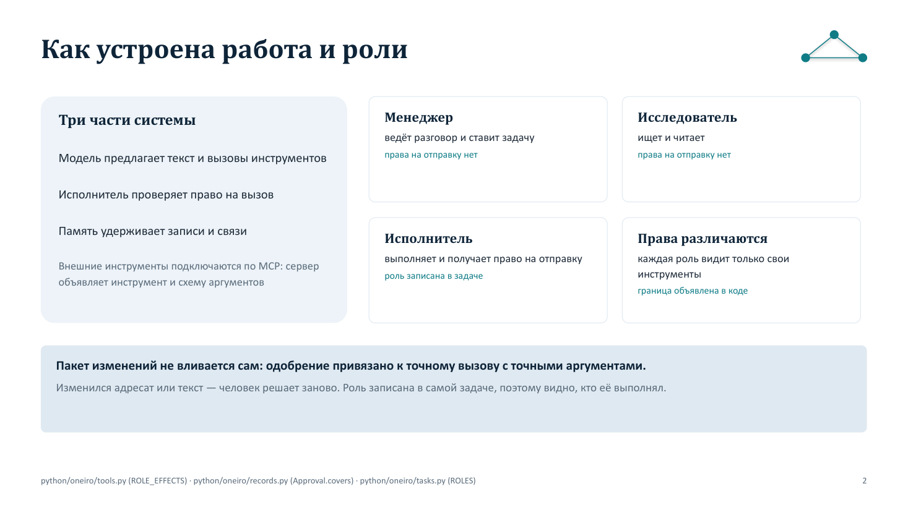
Схема ролейТри части системы и роли с их правами: право на отправку есть у исполнителя, у менеджера его нет.Ответы опроса: 37, 38, 49, 51, 54, 99Доказательство: python/oneiro/tools.py (ROLE_EFFECTS), python/oneiro/tasks.py (ROLES), python/oneiro/records.py (Approval.covers)
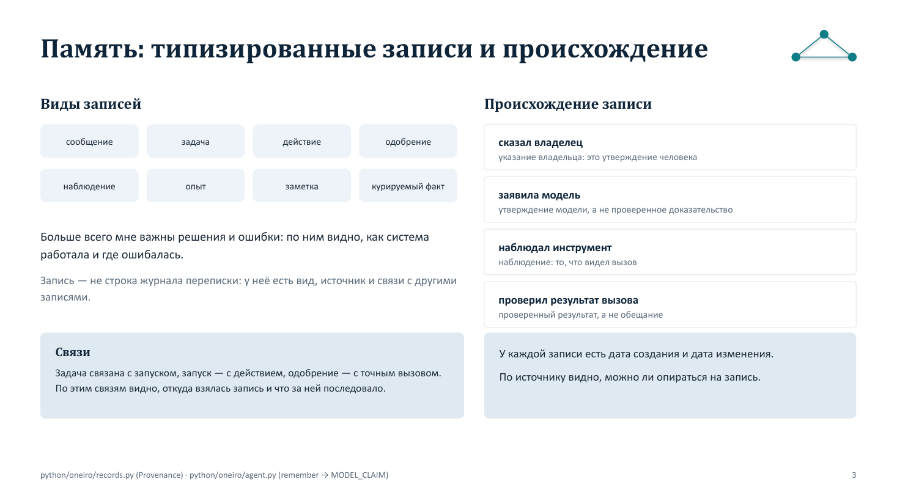
Память: виды записей и происхождениеЗаписи разных видов, и у каждой — источник, дата создания и дата изменения.Ответы опроса: 19, 21, 31, 35Доказательство: python/oneiro/records.py (Provenance), python/oneiro/agent.py (remember → MODEL_CLAIM)
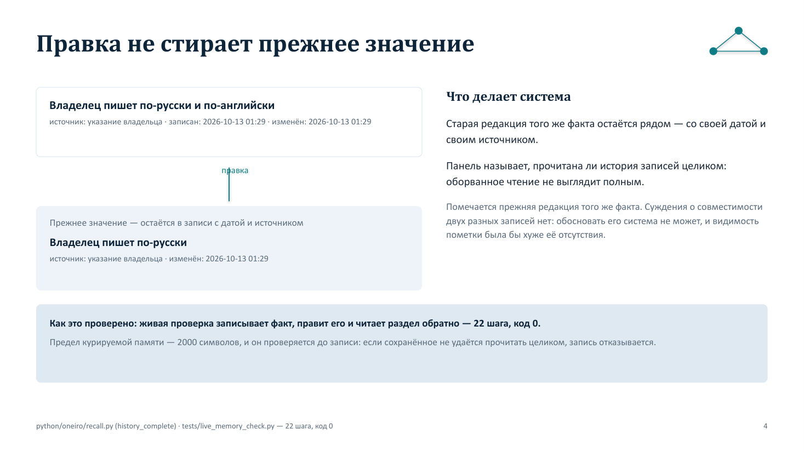
Правка не стирает прежнее значениеПрежняя редакция того же факта остаётся со своей датой и своим источником; вся ли история прочитана, панель говорит.Ответы опроса: 27, 28Доказательство: python/oneiro/recall.py (history_complete), tests/live_memory_check.py — 22 шага, код 0
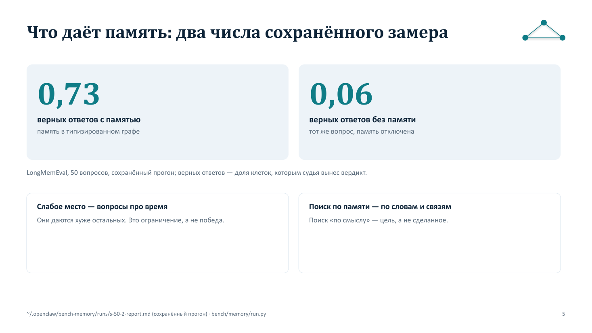
Что даёт память: два числа замераС памятью 0,73, без памяти 0,06 на пятидесяти вопросах; слабое место названо.Ответы опроса: 22, 24, 25, 30Доказательство: ~/.openclaw/bench-memory/runs/s-50-2-report.md (сохранённый прогон: 50 вопросов, судья вынес вердикт 49 клеткам графа и 50 — без памяти); bench/memory/run.py
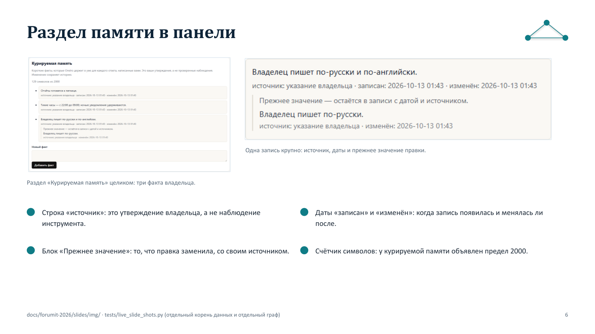
Раздел памяти в панелиКадр панели: три факта владельца, источник, даты, прежнее значение.Ответы опроса: 32Доказательство: docs/forumit-2026/slides/img/ru-memory-facts.png (снят tests/live_slide_shots.py на отдельном корне данных и отдельном графе)
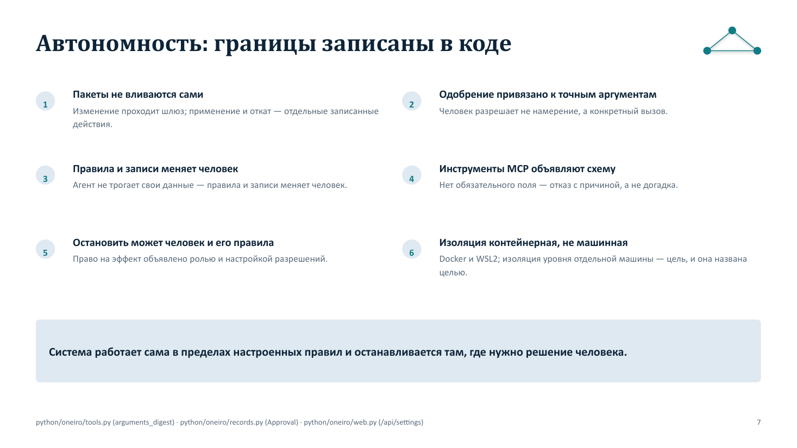
Автономность: границы записаны в кодеТекстом, без схемы: пакеты не вливаются сами, одобрение привязано к точному вызову, изоляция контейнерная.Ответы опроса: 38, 45, 47, 48, 51, 54Доказательство: python/oneiro/tools.py (arguments_digest), python/oneiro/records.py (Approval), python/oneiro/web.py (/api/settings), python/oneiro/office_env.py, docker-compose.yml
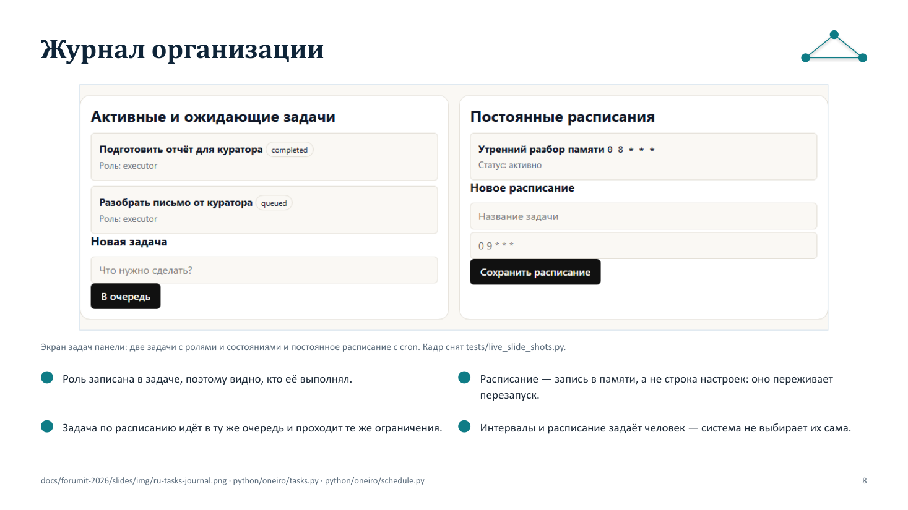
Журнал организацииКадр панели: две задачи с ролями и состояниями и постоянное расписание с cron.Ответы опроса: 43Доказательство: docs/forumit-2026/slides/img/ru-tasks-journal.png (снят tests/live_slide_shots.py); python/oneiro/tasks.py, python/oneiro/schedule.py
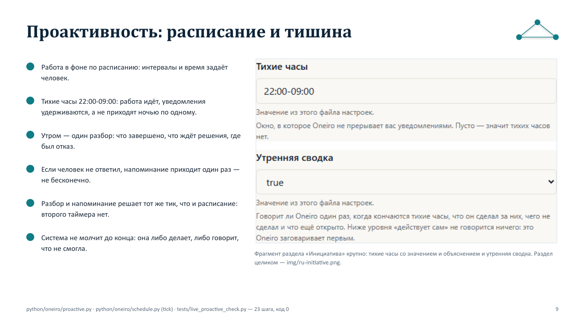
Проактивность: расписание и тишинаРасписание, тихие часы 22:00-09:00, один утренний разбор и одно повторное напоминание — на одном тике.Ответы опроса: 57, 58, 63, 65, 66, 67, 71, 73, 75Доказательство: python/oneiro/proactive.py, python/oneiro/schedule.py (tick), tests/live_proactive_check.py — 23 шага, код 0 (лог _tmp/recheck-20261013/live-proactive.log); docs/forumit-2026/slides/img/ru-initiative.png
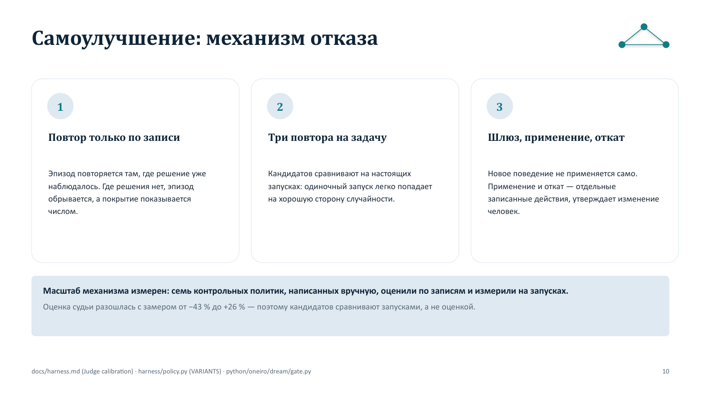
Самоулучшение: механизм отказаТри правила: повтор только по наблюдаемому решению, три повтора на задачу, шлюз с отдельным применением и откатом.Ответы опроса: 80, 83, 86, 88, 93Доказательство: docs/harness.md (Judge calibration), harness/policy.py (VARIANTS), python/oneiro/dream/gate.py, python/oneiro/dream/measure.py
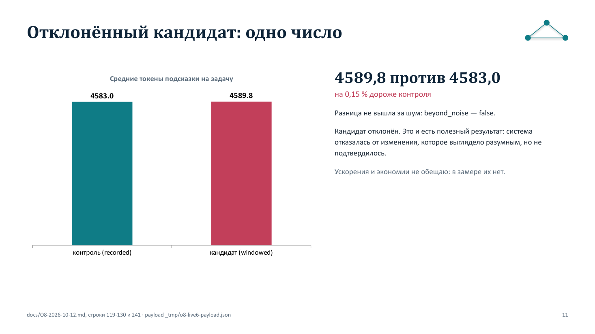
Отклонённый кандидат: одно число4589,8 против 4583,0 — на 0,15 % дороже, разница не вышла за шум, изменение отклонено.Ответы опроса: 78Доказательство: docs/O8-2026-10-12.md, строки 119-130 и 241; payload _tmp/o8-live6-payload.json
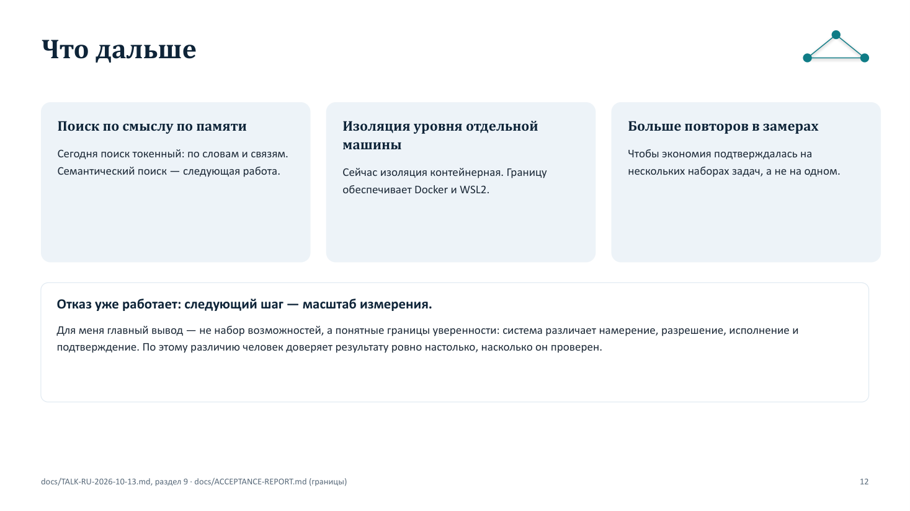
Что дальшеПоиск по смыслу, изоляция уровня отдельной машины, больше повторов в замерах.Ответы опроса: 13, 91, 94Доказательство: docs/TALK-RU-2026-10-13.md, раздел 9; docs/ACCEPTANCE-REPORT.md (границы)
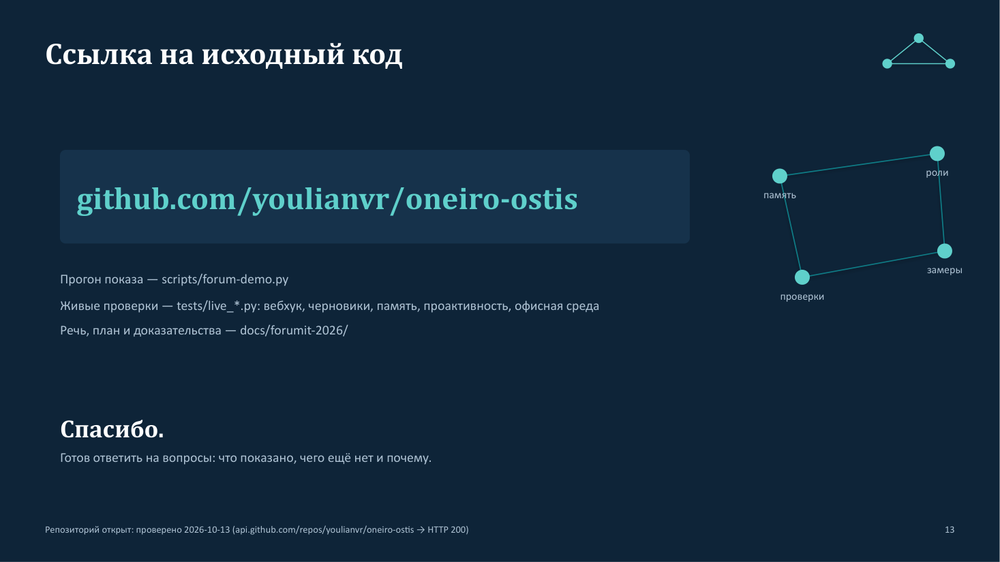
Ссылка на исходный кодСсылка на репозиторий в последнем слайде и то, что в нём лежит.Ответы опроса: 14, 96, 100Доказательство: репозиторий открыт (проверено 2026-10-13: api.github.com/repos/youlianvr/oneiro-ostis → HTTP 200)
Кадры панели, встроенные в слайды
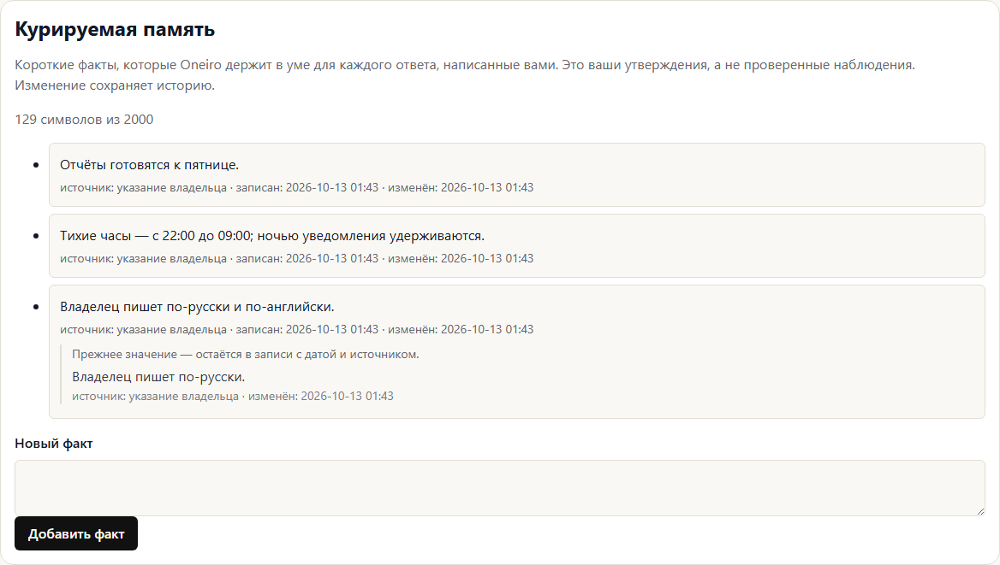
Раздел панели «Курируемая память»: три факта владельца, источник, дата создания и изменения; у первого показано прежнее значение со своим источником и своей датой./memory?lang=ru · #facts · тема «paper» · ru, 44904 байт
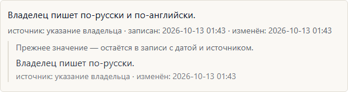
Одна запись раздела «Курируемая память» крупно: факт владельца после правки, источник, даты и прежнее значение с его источником и датой./memory?lang=ru · li.fact-card[data-fact="fact-slide-fact-0001"] · тема «paper» · ru, 12411 байт
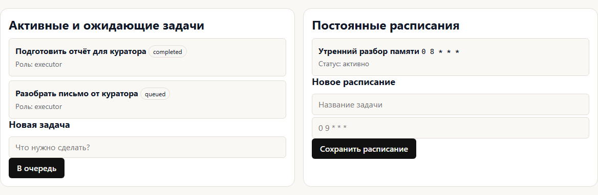
Экран задач, разделы «Активные и ожидающие задачи» и «Постоянные расписания»: две задачи и постоянное расписание./tasks?lang=ru · .screen-container · тема «paper» · ru, 29861 байт
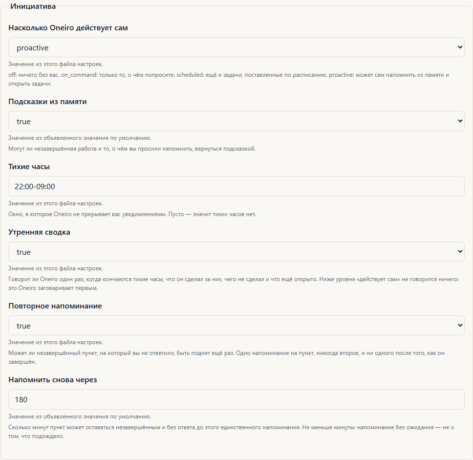
Настройки, раздел «Инициатива» целиком: уровень, тихие часы 22:00-09:00, утренняя сводка и одно повторное напоминание./settings?lang=ru · fieldset:has(legend:text-is('Инициатива')) · тема «paper» · ru, 59191 байт
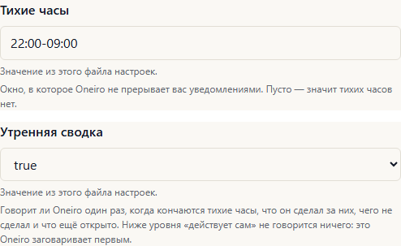
Две строки раздела «Инициатива» крупно: тихие часы со значением и объяснением и утренняя сводка./settings?lang=ru · div.field:has([id='f-initiative.quiet_hours']) + div.field:has([id='f-initiative.digest']) · тема «paper» · ru, 16116 байт